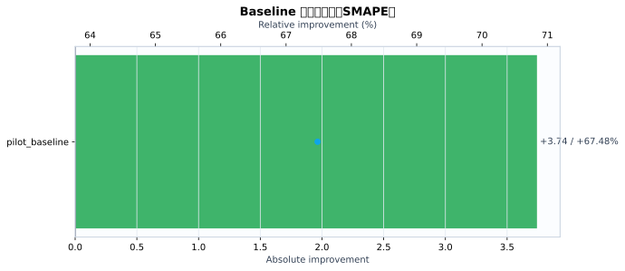
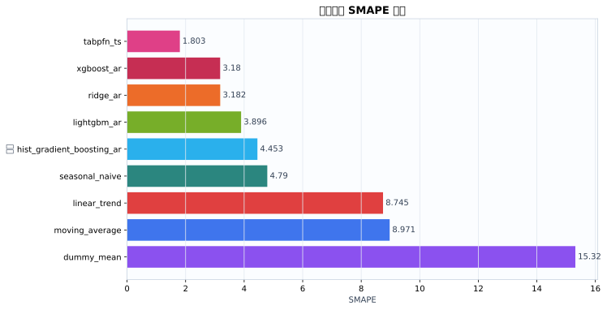
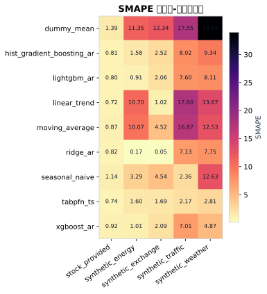
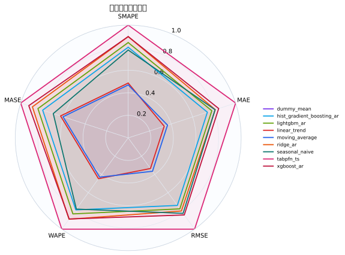
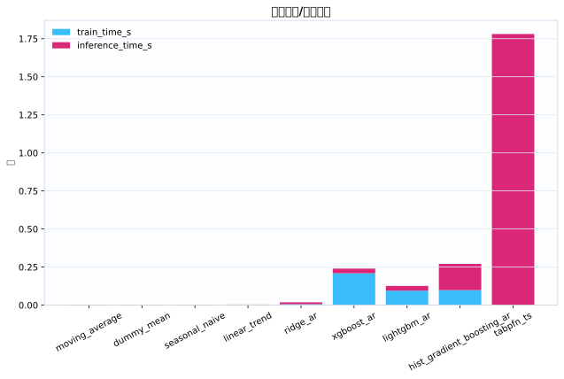
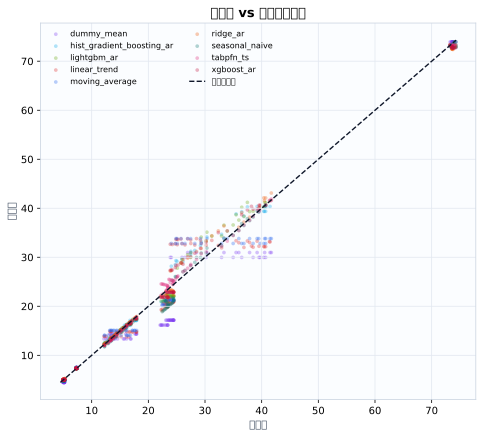
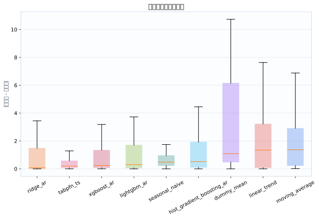

数据集5
模型9
指标行数45
预测行数2160
结论摘要
- 主指标 SMAPE 下，当前 run 的最佳模型是 tabpfn_ts，平均值为 1.803。
- 相对 baseline pilot_baseline，当前最佳模型在 SMAPE 上提升 67.48% （absolute=+3.742）。
核心指标卡片
SMAPE
1.803
最佳模型: tabpfn_ts
GPU_MEMORY_MB
0
最佳模型: dummy_mean
INFERENCE_TIME_S
0.002904
最佳模型: moving_average
MAE
0.3843
最佳模型: tabpfn_ts
MASE
1.641
最佳模型: tabpfn_ts
MSE
0.3501
最佳模型: tabpfn_ts
RMSE
0.4946
最佳模型: tabpfn_ts
TRAIN_TIME_S
0
最佳模型: tabpfn_ts
Baseline 对比
| baseline | metric | current_model | current_value | baseline_model | baseline_value | absolute_difference | relative_improvement_pct |
|---|---|---|---|---|---|---|---|
| pilot_baseline | smape | tabpfn_ts | 1.803 | ridge_ar | 5.545 | 3.742 | 67.48 |
动态交互图表
指标排名动态图
残差直方图
效率-精度散点图
数据集排名轨迹
Matplotlib 可视化图表
Baseline 改变量图
{kind=link}

Baseline/模型平均指标柱状图
{kind=link}

数据集-模型热力图
{kind=link}

多指标雷达图
{kind=link}

运行时间图
{kind=link}

真实值-预测值散点图
{kind=link}

残差箱线图
{kind=link}

训练过程曲线
N/A：当前 run 目录未发现 loss/accuracy/TensorBoard/wandb 训练曲线文件。
错误分析与样本分析
当前支持预测任务的残差与真实-预测散点分析；分类 confusion matrix / ROC / PR 曲线需要真实分类输出后自动启用。
原始 Metrics
| run_id | model | dataset | domain | horizon | context_length | mse | mae | rmse | smape | wape | mase | train_time_s | inference_time_s | gpu_memory_mb |
|---|---|---|---|---|---|---|---|---|---|---|---|---|---|---|
| tabpfn_ts_20260528_112955 | dummy_mean | synthetic_energy | energy | 24 | 96 | 4.204 | 1.69 | 2.05 | 11.35 | 11.23 | 4.002 | 0.0004379 | 0.002841 | 0 |
| tabpfn_ts_20260528_112955 | seasonal_naive | synthetic_energy | energy | 24 | 96 | 0.2304 | 0.48 | 0.48 | 3.287 | 3.189 | 1.136 | 0.0002861 | 0.00238 | 0 |
| tabpfn_ts_20260528_112955 | moving_average | synthetic_energy | energy | 24 | 96 | 2.995 | 1.509 | 1.731 | 10.07 | 10.02 | 3.571 | 0.000284 | 0.002386 | 0 |
| tabpfn_ts_20260528_112955 | linear_trend | synthetic_energy | energy | 24 | 96 | 3.448 | 1.6 | 1.857 | 10.7 | 10.63 | 3.787 | 0.0002738 | 0.002732 | 0 |
| tabpfn_ts_20260528_112955 | ridge_ar | synthetic_energy | energy | 24 | 96 | 0.0008527 | 0.02399 | 0.0292 | 0.1694 | 0.1594 | 0.05679 | 0.00557 | 0.009812 | 0 |
| tabpfn_ts_20260528_112955 | hist_gradient_boosting_ar | synthetic_energy | energy | 24 | 96 | 0.114 | 0.2454 | 0.3377 | 1.577 | 1.631 | 0.581 | 0.1354 | 0.1806 | 0 |
| tabpfn_ts_20260528_112955 | lightgbm_ar | synthetic_energy | energy | 24 | 96 | 0.04743 | 0.1438 | 0.2178 | 0.9121 | 0.9557 | 0.3405 | 0.1053 | 0.02956 | 0 |
| tabpfn_ts_20260528_112955 | xgboost_ar | synthetic_energy | energy | 24 | 96 | 0.04085 | 0.1539 | 0.2021 | 1.011 | 1.023 | 0.3643 | 0.3142 | 0.02789 | 0 |
| tabpfn_ts_20260528_112955 | tabpfn_ts | synthetic_energy | energy | 24 | 96 | 0.05868 | 0.2278 | 0.2422 | 1.602 | 1.514 | 0.5393 | 0 | 2.277 | 0 |
| tabpfn_ts_20260528_112955 | dummy_mean | synthetic_traffic | traffic | 24 | 96 | 41.85 | 5.684 | 6.469 | 17.55 | 17.33 | 4.127 | 0.0004469 | 0.002416 | 0 |
| tabpfn_ts_20260528_112955 | seasonal_naive | synthetic_traffic | traffic | 24 | 96 | 0.6827 | 0.6836 | 0.8262 | 2.361 | 2.084 | 0.4963 | 0.0003954 | 0.002451 | 0 |
| tabpfn_ts_20260528_112955 | moving_average | synthetic_traffic | traffic | 24 | 96 | 36.68 | 5.467 | 6.056 | 16.87 | 16.67 | 3.969 | 0.0002808 | 0.002453 | 0 |
| tabpfn_ts_20260528_112955 | linear_trend | synthetic_traffic | traffic | 24 | 96 | 39.22 | 5.709 | 6.262 | 17.6 | 17.41 | 4.145 | 0.0002704 | 0.002714 | 0 |
| tabpfn_ts_20260528_112955 | ridge_ar | synthetic_traffic | traffic | 24 | 96 | 6.204 | 2.22 | 2.491 | 7.128 | 6.769 | 1.612 | 0.005436 | 0.01 | 0 |
| tabpfn_ts_20260528_112955 | hist_gradient_boosting_ar | synthetic_traffic | traffic | 24 | 96 | 7.8 | 2.471 | 2.793 | 8.02 | 7.533 | 1.794 | 0.08932 | 0.18 | 0 |
| tabpfn_ts_20260528_112955 | lightgbm_ar | synthetic_traffic | traffic | 24 | 96 | 7.327 | 2.354 | 2.707 | 7.602 | 7.176 | 1.709 | 0.08828 | 0.03034 | 0 |
| tabpfn_ts_20260528_112955 | xgboost_ar | synthetic_traffic | traffic | 24 | 96 | 5.877 | 2.159 | 2.424 | 7.009 | 6.582 | 1.567 | 0.1661 | 0.033 | 0 |
| tabpfn_ts_20260528_112955 | tabpfn_ts | synthetic_traffic | traffic | 24 | 96 | 0.5338 | 0.6471 | 0.7306 | 2.171 | 1.973 | 0.4698 | 0 | 1.806 | 0 |
| tabpfn_ts_20260528_112955 | dummy_mean | synthetic_weather | weather | 24 | 96 | 46.63 | 6.815 | 6.829 | 33.95 | 29.02 | 52.27 | 0.0004816 | 0.00314 | 0 |
| tabpfn_ts_20260528_112955 | seasonal_naive | synthetic_weather | weather | 24 | 96 | 8.652 | 2.771 | 2.941 | 12.63 | 11.8 | 21.25 | 0.0003693 | 0.003325 | 0 |
| tabpfn_ts_20260528_112955 | moving_average | synthetic_weather | weather | 24 | 96 | 7.871 | 2.771 | 2.806 | 12.53 | 11.8 | 21.25 | 0.0003638 | 0.003215 | 0 |
| tabpfn_ts_20260528_112955 | linear_trend | synthetic_weather | weather | 24 | 96 | 9.349 | 3.003 | 3.058 | 13.67 | 12.79 | 23.04 | 0.0003652 | 0.003416 | 0 |
| tabpfn_ts_20260528_112955 | ridge_ar | synthetic_weather | weather | 24 | 96 | 4.14 | 1.727 | 2.035 | 7.75 | 7.354 | 13.24 | 0.006852 | 0.01357 | 0 |
| tabpfn_ts_20260528_112955 | hist_gradient_boosting_ar | synthetic_weather | weather | 24 | 96 | 4.626 | 2.099 | 2.151 | 9.343 | 8.939 | 16.1 | 0.08186 | 0.1574 | 0 |
| tabpfn_ts_20260528_112955 | lightgbm_ar | synthetic_weather | weather | 24 | 96 | 3.604 | 1.832 | 1.898 | 8.105 | 7.802 | 14.05 | 0.08932 | 0.0296 | 0 |
| tabpfn_ts_20260528_112955 | xgboost_ar | synthetic_weather | weather | 24 | 96 | 1.448 | 1.12 | 1.203 | 4.87 | 4.77 | 8.59 | 0.1832 | 0.03104 | 0 |
| tabpfn_ts_20260528_112955 | tabpfn_ts | synthetic_weather | weather | 24 | 96 | 0.9804 | 0.6771 | 0.9902 | 2.81 | 2.884 | 5.193 | 0 | 1.647 | 0 |
| tabpfn_ts_20260528_112955 | dummy_mean | synthetic_exchange | economics | 24 | 96 | 0.358 | 0.5915 | 0.5983 | 12.34 | 11.64 | 12.51 | 0.0004843 | 0.003141 | 0 |
| tabpfn_ts_20260528_112955 | seasonal_naive | synthetic_exchange | economics | 24 | 96 | 0.06304 | 0.2254 | 0.2511 | 4.536 | 4.435 | 4.769 | 0.0003861 | 0.003372 | 0 |
| tabpfn_ts_20260528_112955 | moving_average | synthetic_exchange | economics | 24 | 96 | 0.05886 | 0.2254 | 0.2426 | 4.519 | 4.435 | 4.769 | 0.0003735 | 0.003253 | 0 |
| tabpfn_ts_20260528_112955 | linear_trend | synthetic_exchange | economics | 24 | 96 | 0.003342 | 0.05211 | 0.05781 | 1.024 | 1.025 | 1.102 | 0.0003671 | 0.003523 | 0 |
| tabpfn_ts_20260528_112955 | ridge_ar | synthetic_exchange | economics | 24 | 96 | 7.681e-06 | 0.002487 | 0.002771 | 0.04882 | 0.04892 | 0.05261 | 0.006761 | 0.01357 | 0 |
| tabpfn_ts_20260528_112955 | hist_gradient_boosting_ar | synthetic_exchange | economics | 24 | 96 | 0.02181 | 0.1271 | 0.1477 | 2.517 | 2.5 | 2.688 | 0.08899 | 0.1563 | 0 |
| tabpfn_ts_20260528_112955 | lightgbm_ar | synthetic_exchange | economics | 24 | 96 | 0.01603 | 0.1043 | 0.1266 | 2.06 | 2.053 | 2.207 | 0.09324 | 0.03005 | 0 |
| tabpfn_ts_20260528_112955 | xgboost_ar | synthetic_exchange | economics | 24 | 96 | 0.01565 | 0.1056 | 0.1251 | 2.086 | 2.078 | 2.235 | 0.1931 | 0.02947 | 0 |
| tabpfn_ts_20260528_112955 | tabpfn_ts | synthetic_exchange | economics | 24 | 96 | 0.01024 | 0.08567 | 0.1012 | 1.69 | 1.686 | 1.813 | 0 | 1.532 | 0 |
| tabpfn_ts_20260528_112955 | dummy_mean | stock_provided | finance | 24 | 96 | 0.07655 | 0.2404 | 0.2767 | 1.388 | 0.5934 | 0.1615 | 0.0005037 | 0.003216 | 0 |
| tabpfn_ts_20260528_112955 | seasonal_naive | stock_provided | finance | 24 | 96 | 0.1239 | 0.2696 | 0.352 | 1.14 | 0.6653 | 0.1811 | 0.0003558 | 0.003369 | 0 |
| tabpfn_ts_20260528_112955 | moving_average | stock_provided | finance | 24 | 96 | 0.1264 | 0.2536 | 0.3556 | 0.8676 | 0.6259 | 0.1704 | 0.0003551 | 0.003214 | 0 |
| tabpfn_ts_20260528_112955 | linear_trend | stock_provided | finance | 24 | 96 | 0.1418 | 0.2668 | 0.3766 | 0.7194 | 0.6584 | 0.1792 | 0.0003584 | 0.003489 | 0 |
| tabpfn_ts_20260528_112955 | ridge_ar | stock_provided | finance | 24 | 96 | 0.4241 | 0.4338 | 0.6512 | 0.8156 | 1.071 | 0.2914 | 0.006847 | 0.01345 | 0 |
| tabpfn_ts_20260528_112955 | hist_gradient_boosting_ar | stock_provided | finance | 24 | 96 | 0.3824 | 0.4241 | 0.6184 | 0.8108 | 1.047 | 0.2849 | 0.09573 | 0.1888 | 0 |
| tabpfn_ts_20260528_112955 | lightgbm_ar | stock_provided | finance | 24 | 96 | 0.3369 | 0.3928 | 0.5804 | 0.8015 | 0.9693 | 0.2638 | 0.09885 | 0.03544 | 0 |
| tabpfn_ts_20260528_112955 | xgboost_ar | stock_provided | finance | 24 | 96 | 0.4339 | 0.4502 | 0.6587 | 0.9238 | 1.111 | 0.3024 | 0.1896 | 0.03188 | 0 |
| tabpfn_ts_20260528_112955 | tabpfn_ts | stock_provided | finance | 24 | 96 | 0.1672 | 0.2839 | 0.4089 | 0.7418 | 0.7007 | 0.1907 | 0 | 1.642 | 0 |
配置参数
展开/折叠配置
{
"/home/wanyi/zy_test/tabpfn-ts-benchmark/configs/config.yaml": {
"defaults": [
{
"dataset": "etth1"
},
{
"model": "seasonal_naive"
},
{
"experiment": "e1_zeroshot"
},
"_self_"
],
"seed": 42,
"output_dir": "results",
"wandb": {
"project": "tabpfn-quant",
"mode": "offline",
"entity": null
},
"hydra": {
"run": {
"dir": "outputs/${now:%Y-%m-%d}/${now:%H-%M-%S}"
}
}
}
}运行环境
{
"python": "3.10.12",
"platform": "Linux-6.8.0-111-generic-x86_64-with-glibc2.35",
"git_head": "N/A",
"git_dirty": false
}Warnings
- 无
产物链接
- metrics.json
- summary.csv
- 源 run 目录: /home/wanyi/zy_test/tabpfn-ts-benchmark/results/full_benchmark_v1_c96_h24_s2
- 主指标: smape